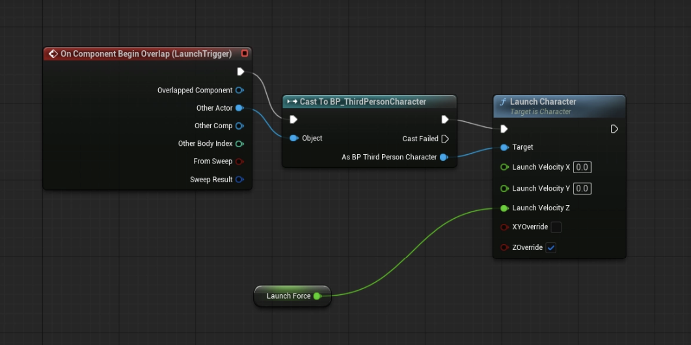
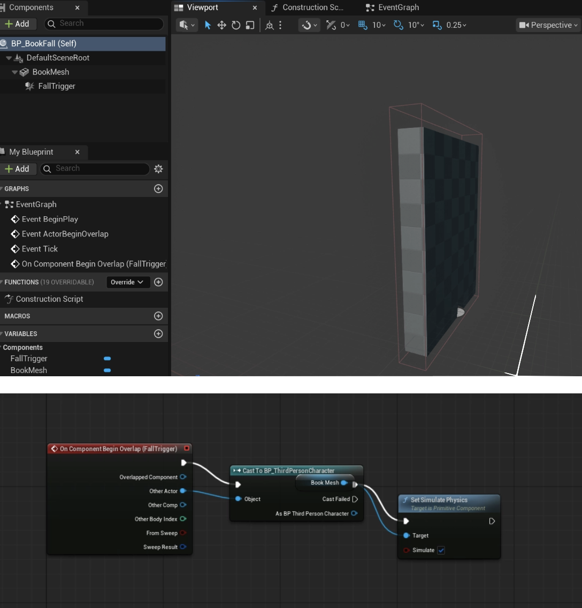
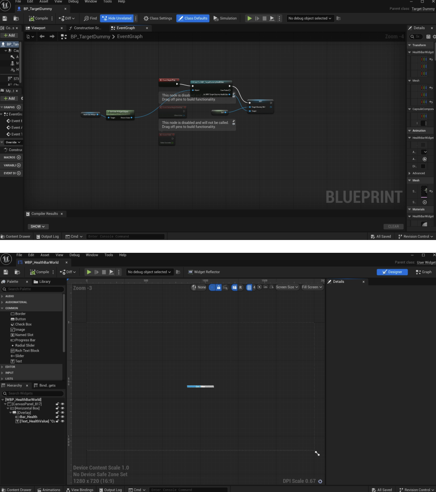

Soft Things Hit Hard

Soft Things Hit Hard
Unreal Engine | C++ | Multiplayer | Gameplay Systems | Audio
Soft Things Hit Hard is an online third-person party battle royale where squishy, play-doh-like creatures scavenge everyday objects to use as tools for combat, assemble improvised weapons and armor, and fight to be the last blob standing in a chaotic multiplayer experience.
- Role: Games Engineer & Audio Designer
- Project: Advanced Senior Project
- Team: 30+ Developers
- Engine: Unreal Engine
- Development: C++ & Blueprint
Core Gameplay
The core gameplay loop combines exploration, equipment building, and multiplayer combat.
- Scavenge: Explore oversized environments and collect everyday objects that can be used during a match.
- Stick: Attach collected objects to your character to create improvised equipment, weapons, and armor.
- Fight: Use your assembled loadout against other players in chaotic third-person multiplayer combat.
Project Overview
Gameplay Engineering
I developed reusable gameplay gadgets and testing systems for Soft Things Hit Hard in Unreal Engine. These systems were designed to be easy for level designers to place, configure, and iterate on directly inside the editor.
My work includes interactive traversal gadgets, environmental obstacles, gameplay UI, and multiplayer testing. Important gameplay properties are exposed through the Details panel so designers can adjust individual instances without modifying the underlying Blueprint.
Jump Pad
Blueprint | Gameplay Systems | Designer Tools
I developed BP_JumpPad, a reusable gameplay gadget that launches players upward when they enter its activation area.
The system uses a configurable LaunchTrigger that determines the area in which the jump pad activates. Designers can reposition and resize the trigger directly in the level to control when the player is launched.
I also exposed the LaunchForce property in the Details panel so each jump pad instance can have its own launch strength without requiring changes to the Blueprint.
- Reusable Blueprint: Can be dragged directly into different levels.
- Adjustable Trigger: Designers can reposition and resize the activation region.
- Exposed Launch Force: Launch strength can be configured independently for each instance.
- Multiplayer Testing: Functionality tested with Client 2 in the multiplayer environment.
Jump Pad Gameplay
Jump Pad Setup

Falling Book Gameplay
Fall Trigger Setup & Blueprint

Falling Book Obstacle
Blueprint | Trigger Systems | Level Design Tools
I developed BP_BookFall, a reusable environmental obstacle that remains in its starting position until a player enters its FallTrigger.
Rather than tying the activation area directly to the physical dimensions of the book, the trigger can be independently repositioned and resized.
This gives level designers control over exactly when the obstacle activates. For example, the trigger can be positioned farther away so the book begins falling before the player reaches it.
- Reusable Gadget: Can be placed directly into different maps.
- Independent Fall Trigger: The activation region does not need to match the physical shape of the book.
- Designer Control: Trigger position and dimensions can be adjusted directly within the level.
- Multiplayer Testing: Falling behavior tested with Client 2.
Target Dummy Health System
Unreal Engine | UI | Gameplay Feedback
I implemented a world-space health display for BP_TargetDummy that provides immediate visual feedback as the dummy takes damage during gameplay.
Each Target Dummy contains its own health-bar widget, allowing designers to place new instances into a level without manually creating or connecting UI for every dummy.
The widget reads the Target Dummy's Current Health and Max Health and updates the displayed value and health bar as damage is received.
The UI can also be adjusted independently from the gameplay logic. Designers can change the widget's transform, draw size, scale, and visual appearance without modifying how the Target Dummy handles health.
- World-Space UI: Health information appears directly with the Target Dummy.
- Dynamic Health: The health bar updates as Current Health changes relative to Max Health.
- Reusable Setup: Every placed Target Dummy already contains its required UI.
- Designer-Friendly: Widget positioning and appearance can be changed separately from gameplay logic.
- Multiplayer Testing: Health behavior and UI tested with Client 2.
Target Dummy Health System
World-Space Health UI & Blueprint

Level & Multiplayer Testing
Lvl_GadgetTest | Multiplayer
The gameplay gadgets are available in Lvl_GadgetTest, providing designers and engineers with a dedicated environment for testing their behavior before placing them into production maps.
I also tested these gameplay systems in the project's multiplayer environment, including their behavior when interacting through Client 2.
This testing helps verify that gameplay interactions continue to behave correctly when executed by a multiplayer client rather than only from the host.
Audio Design
Alongside gameplay engineering, I am contributing to the audio side of the project, helping develop and implement sound that communicates player actions, combat interactions, and gameplay feedback.
Audio work currently in development.